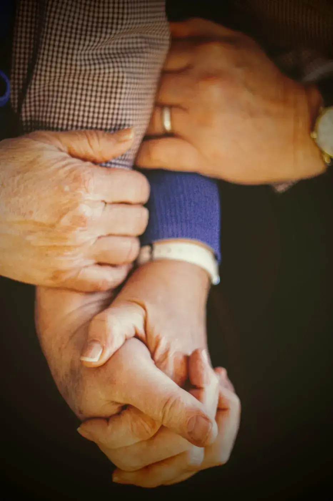
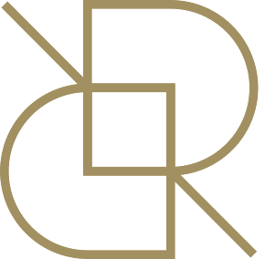
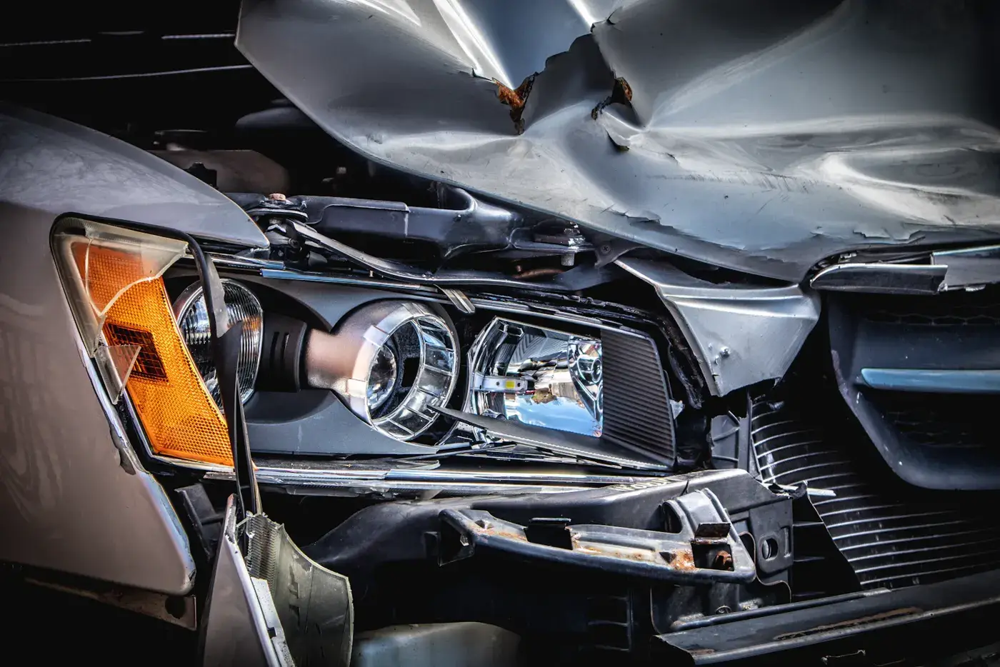

01Strafrecht
Bijstand bij een verhoor, tijdens het onderzoek en voor de correctionele rechtbank. Als verdachte of als slachtoffer.
Drie advocaten aan de Sint-Alfonsusstraat in Roeselare. We leggen u in gewone taal uit wat er in dat document staat, wat er kan gebeuren en wat u best eerst doet.
Elke advocaat heeft een eigen nummer.
FDFilip De ReuseAdvocaat051 20 25 00 GEGregory EveraertAdvocaat0472 61 61 37 LRLoes RoelsAdvocaat0470 68 98 47Wie met justitie of de politierechtbank te maken krijgt, wil snel weten waar hij staat. Daar ligt de focus van het kantoor.

01Bijstand bij een verhoor, tijdens het onderzoek en voor de correctionele rechtbank. Als verdachte of als slachtoffer.
Ongevallen, overtredingen, een intrekking van uw rijbewijs en zaken voor de politierechtbank.
Dossiers die over de grens gaan. Gesprekken kunnen ook in het Frans of het Engels.
Wanneer fundamentele rechten in het gedrang komen, ook tegenover de overheid.
Een eerste oriëntatie in gewone taal. Elk dossier is anders, dus bel ons voor een advies dat bij uw situatie past.
Algemene informatie, geen juridisch advies voor uw specifieke situatie.
Geen onthaal dat u doorverbindt en geen dossier dat van bureau naar bureau gaat. U kiest zelf wie u belt, en die persoon volgt uw zaak op.
Legt zich toe op strafrecht, verkeersrecht, internationaal strafrecht en mensenrechten.
Rechtstreeks bereikbaar op zijn eigen gsm. Zo hebt u meteen iemand aan de lijn die uw dossier kent.
Rechtstreeks bereikbaar op haar eigen gsm, ook voor een eerste vraag.

Wie bij ons binnenkomt, heeft meestal een brief op zak die hij liever niet had gekregen. Daarom beginnen we altijd met uitleg. Wat staat erin, wat kan er gebeuren, en wat doen we eerst.Filip, Gregory en Loes

Dat hangt af van uw dossier. In veel zaken kan uw advocaat u vertegenwoordigen. Bel ons met uw dagvaarding bij de hand, dan zeggen we het u meteen.
Bij verkeerszaken en als slachtoffer dekt een rechtsbijstandsverzekering vaak een deel of alles. Kijk uw polis na of breng ze mee.
Ja. Filip De Reuse spreekt Nederlands, Frans en Engels.
Hebt u al een advocaat van het kantoor, bel dan rechtstreeks die persoon. Voor een nieuwe vraag kan u het algemene nummer 051 20 25 00 gebruiken.
De dagvaarding of de uitnodiging tot verhoor, het proces-verbaal als u het hebt, uw verzekeringspolis en alle brieven die u ontving.
Het kantoor ligt aan de Sint-Alfonsusstraat 36. Bel voor een afspraak, of laat een bericht achter.
Kantoor051 20 25 00 E-mailinfo@dereuseadvocaten.be AdresSint-Alfonsusstraat 36, 8800 Roeselare| Maandag | 8.30 tot 19.00 |
| Dinsdag | 8.30 tot 19.00 |
| Woensdag | 8.30 tot 19.00 |
| Donderdag | 8.30 tot 19.00 |
| Vrijdag | 8.30 tot 19.00 |
| Zaterdag | Gesloten |
| Zondag | Gesloten |
Ik maakte deze site voor De Reuse Advocaten zonder u al te kennen. De teksten haalde ik uit wat ik online over uw zaak vond, de foto's en de stijl koos ik zelf.
De echte site maak ik pas na een gesprek. Dan hoor ik wat uw klanten altijd vragen, wat er anders moet en wat écht bij u past. Het resultaat wordt een stuk mooier en persoonlijker dan wat hier staat.
Een half uurtje, vrijblijvend. U vertelt wat u wil, ik toon wat kan. Ook als u daarna niet verder wil, is dat helemaal oké.
De volledige site, op gsm, tablet en computer. Alles inbegrepen.
Hosting, domein en aanpassingen door mij. Liever zelf beheren? Dan betaalt u niets per maand.
Geen voorschot. U betaalt pas als de site klaar is.
Stijn Vranken · Digital Impression · 0496 25 14 45 · info@digital-impression.be · digital-impression.be